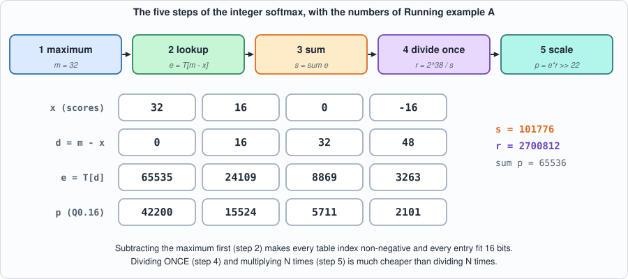
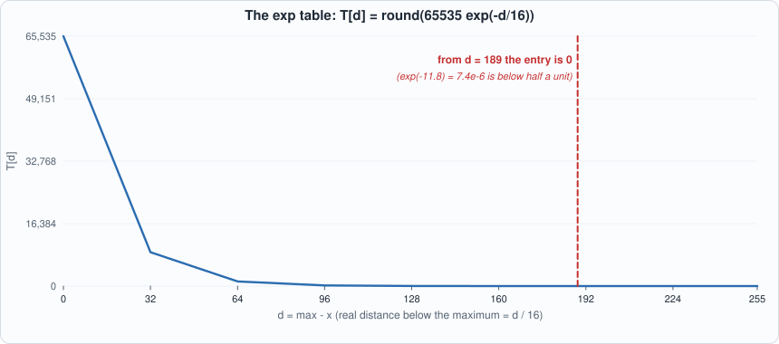
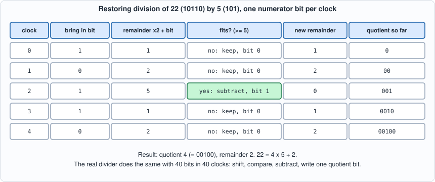
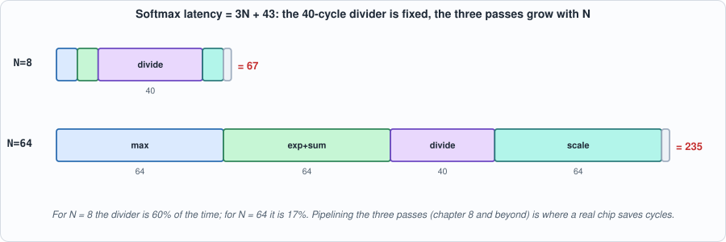
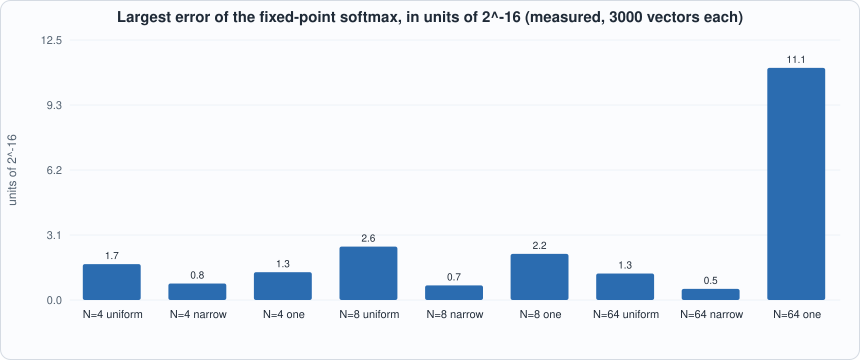
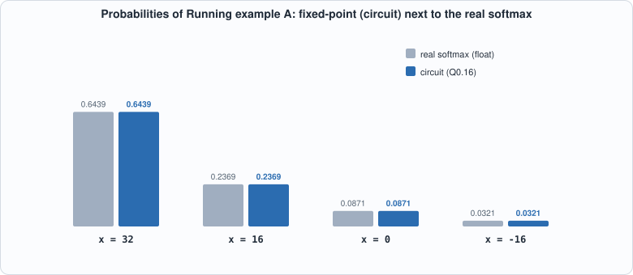
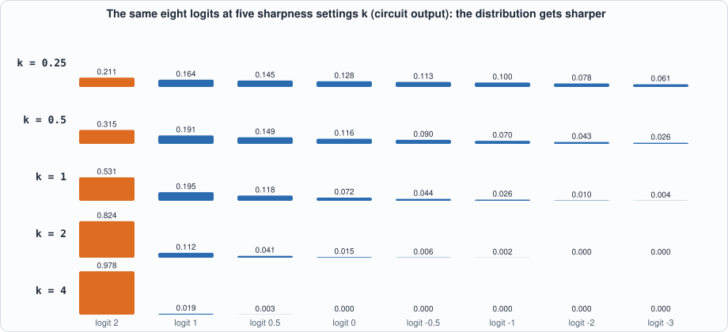

6. The Vector Unit: A Lookup-Table Exponential, a Divider, and Fixed-Point Softmax¶
About the animals in this picture and where they are standing
- Walia ibex (Capra walie) lives nowhere but the Simien Mountains of northern Ethiopia, on high cliffs. It is endangered, with only a few hundred animals remaining, and is protected within the Simien Mountains National Park.
- Nubian ibex (Capra nubiana) lives in the rocky, arid hills of north-east Africa and the Arabian Peninsula, from the Sinai and Egypt south to Sudan and Ethiopia. Its coat matches the desert rock, and the males' ridged horns sweep back like a sickle.
- Bezoar ibex (wild goat) (Capra aegagrus) lives from Turkey and the Caucasus through Iran to Pakistan. It is the wild ancestor of the domestic goat, which people began keeping some ten thousand years ago.
- Markhor (Capra falconeri) lives in the mountains of Pakistan, Afghanistan and neighbouring regions. The males' horns twist in a corkscrew; the name is often explained as Persian for 'snake-eater'. It is Pakistan's national animal, and community-based conservation has helped some populations recover.
The scene is imaginary: it is set on Io, the most volcanically active body in the solar system, under the enormous disc of Jupiter. The animals are stylised drawings, shown where they could not live, for effect.
What you will understand: the part of a transformer that is not a matrix product. Attention needs softmax, which needs an exponential and a division, and a chip with only integer multipliers must do both in integers. You will build the three pieces (an exp lookup table, a bit-serial divider, and the softmax unit that uses them), check each one against Python bit for bit, measure how far the result is from the real softmax, and meet a test that would have passed a bug until a new check was added.
What you need to know first: Chapter 3 (fixed-point numbers, scales) and Chapter 5 (cycle-level thinking). Appendix E (transformers and LLM inference) says where softmax sits in a model.
What this chapter builds: tools/gen_exp_lut.py and rtl/exp_lut.v (the exponential table), rtl/divu.v (the divider), rtl/softmax.v (the unit), model/softmax_gold.py (three answer keys), tb/exp_lut_tb.v, tb/divu_tb.v, tb/softmax_tb.v, tools/mut_ch06.py, tools/ch06_study.py, and for the running examples tb/softmax_one_tb.v, tools/ch06_example_a.py, tools/ch06_example_b.py.
Why a chip full of multipliers still needs a special unit¶
Chapters 2 to 5 built the part of the chip that does matrix products. A transformer is not only matrix products. Between the two matrix products of attention sits a step that turns a row of scores into a set of weights that are positive and add up to one, so they can be used to average the values. That step is softmax. It appears in every attention head of every layer, once per generated token per row: it is a small fraction of the arithmetic but, as the cycle counts below show, not a small fraction of the time unless it is built with care.
The difficulty is that softmax is made of operations a multiplier array cannot do: an exponential and a division. The next sections show how each is replaced by something a chip can do cheaply.
Softmax, and why it is awkward in hardware¶
For scores x_1 ... x_N, softmax turns them into probabilities:
Three things are hard for a small integer chip: exp is not a multiply or add; the exponent of a big score overflows any fixed-width number; and the sum needs a division, which is slow and large in hardware. The standard answers:
- Subtract the maximum first.
softmax(x) = softmax(x - max x). Now every exponent is<= 0, so everyexpis in(0, 1]and fits a fixed-width fraction. This is the same trick floating-point libraries use to avoid overflow. - Look the exponential up in a table. The scores are int8 (a real number times 16, i.e. Q4.4), so the distance below the maximum
d = max - xis an integer 0..255. A 256-entry table givesexp(-d/16)in 16 bits. No arithmetic. - Divide once, multiply many times. Compute one reciprocal
r = 2^38 / sumwith a divider, thenp_i = e_i * rwith a multiplier.

Figure 6.1: the five steps, with the numbers of Running example A. Follow one column: x = 16 gives d = 16, e = 24109, p = 15524, which is 0.2369 of 65536.The table: tools/gen_exp_lut.py and rtl/exp_lut.v¶
The table is generated, not typed in: entry d is round(65535 * exp(-d/16)). The generator uses Python's decimal module at 50 digits, whereas the golden model uses floating-point math.exp, so the circuit's table and the answer key's table come from two different computations and the test fails if they ever disagree.
#!/usr/bin/env python3
"""Chapter 6: generate rtl/exp_lut.v, the lookup table for exp(-d/16) scaled to 16 bits: entry d (0..255) is round(65535 * exp(-d/16)).
It is computed with the `decimal` module at 50 digits, NOT with the floating-point math.exp that the golden model uses, so the table in the circuit and the table in the answer key are produced by two different computations and must agree. Usage: gen_exp_lut.py"""
import os
from decimal import Decimal, getcontext
getcontext().prec = 50
ROOT = os.path.dirname(os.path.dirname(os.path.abspath(__file__)))
def entry(d): return int((Decimal(65535) * (-Decimal(d) / 16).exp()).to_integral_value(rounding="ROUND_HALF_EVEN"))
rows = [" 8'd%d: e = 16'd%d;" % (d, entry(d)) for d in range(256)]
src = ("// Chapter 6: exp(-d/16) in 16-bit fixed point: e = round(65535 * exp(-d/16)) for d = 0..255. GENERATED by tools/gen_exp_lut.py; do not edit by hand.\n"
"// d is the distance below the maximum in units of 1/16, so the table covers 0 .. 15.94 below the max; from d = 189 (11.8 below the maximum) the entries are 0 (the 16-bit table cannot represent them).\n"
"module exp_lut(input [7:0] d, output reg [15:0] e);\n always @* begin\n case (d)\n" + "\n".join(rows) + "\n default: e = 16'd0;\n endcase\n end\nendmodule\n")
open(os.path.join(ROOT, "rtl", "exp_lut.v"), "w").write(src); print("rtl/exp_lut.v written;", sum(1 for d in range(256) if entry(d) == 0), "of 256 entries are zero; first nonzero-run ends at d =", max(d for d in range(256) if entry(d) > 0))

Figure 6.2: the 256-entry table. It falls from 65535 at d = 0 to 7 at d = 188 and is rounded to 0 from d = 189 on.The first lines of the generated Verilog (the file has 256 entries; 67 of them are 0, from d = 189 on, where exp(-189/16) = 7.4e-6 is below half a unit of 65535):
module exp_lut(input [7:0] d, output reg [15:0] e);
always @* begin
case (d)
8'd0: e = 16'd65535;
8'd1: e = 16'd61564;
8'd2: e = 16'd57834;
...
The divider: rtl/divu.v¶
// Chapter 6: an unsigned divider, one quotient bit per clock (restoring division: shift the remainder left, bring in the next bit of the numerator, subtract the divisor if it fits).
// quot = num / den and rem = num % den; done pulses W cycles after the start cycle. Dividing by zero is defined, not undefined: quot = all ones, rem = num (what the loop naturally does when the subtraction always "fits").
// This is the reciprocal unit of softmax: a divide is slow and large in hardware, so the chip does ONE division per row and multiplies the rest.
module divu #(parameter W = 40) (input clk, input rst, input start, input [W-1:0] num, input [W-1:0] den,
output reg busy, output reg done, output reg [W-1:0] quot, output reg [W-1:0] rem);
reg [W-1:0] n_r, d_r; reg [W:0] r; reg [W-1:0] q; reg [7:0] cnt;
wire [W:0] shifted = {r[W-1:0], n_r[W-1]};
wire fits = shifted >= {1'b0, d_r};
wire [W:0] r_next = fits ? shifted - {1'b0, d_r} : shifted;
wire [W-1:0] q_next = {q[W-2:0], fits};
always @(posedge clk) begin
done <= 1'b0;
if (rst) busy <= 1'b0;
else if (start && !busy) begin busy <= 1'b1; n_r <= num; d_r <= den; r <= 0; q <= 0; cnt <= W; end
else if (busy) begin
r <= r_next; q <= q_next; n_r <= n_r << 1; cnt <= cnt - 1;
if (cnt == 1) begin busy <= 1'b0; done <= 1'b1; quot <= q_next; rem <= r_next[W-1:0]; end
end
end
endmodule
Restoring division, one quotient bit per clock: shift the remainder left, bring in the next bit of the numerator, and if the divisor fits, subtract it and write a 1. It is small, slow (40 cycles for 40 bits) and exactly what a school long division does in binary. Division by zero is defined (quotient all ones, remainder = numerator), because hardware cannot raise an exception and an undefined case is a hole in the test.

Figure 6.3: restoring division in miniature (5 bits instead of 40). Each clock brings in one numerator bit, compares, and either subtracts (quotient bit 1) or keeps (bit 0). After 5 clocks: 22 = 4 x 5 + 2.Commentary. shifted is the remainder moved one place left with the next numerator bit appended; fits asks whether the divisor can be subtracted; r_next and q_next are the two possible outcomes selected by fits; cnt counts down from W. The module has no data-dependent timing at all: it always takes W cycles, which is what lets a controller schedule around it.
The softmax unit: rtl/softmax.v¶
// Chapter 6: softmax of N signed 8-bit scores (each is a real number times 16: Q4.4), producing N probabilities in Q0.16 (65536 = 1.0), in fixed-point integers only.
// p_i = exp(x_i - max) / sum_j exp(x_j - max)
// Steps: (1) find the maximum; (2) for each element look up e_i = exp(-(max - x_i)/16) in a 256-entry table and add it to the sum; (3) ONE division r = floor(2^38 / sum); (4) p_i = (e_i * r + 2^21) >> 22.
// Subtracting the maximum first keeps every exponent <= 0, so e_i <= 65535 and nothing overflows: the same trick as in floating-point softmax, here it is what makes 16-bit entries enough.
module softmax #(parameter N = 8) (input clk, input rst, input start, input [8*N-1:0] x, output reg busy, output reg done, output reg [17*N-1:0] p);
reg signed [7:0] xs [0:N-1]; reg [15:0] ev [0:N-1];
reg [2:0] state; reg [7:0] idx; reg signed [7:0] m; reg [31:0] sum; reg [39:0] r;
localparam IDLE = 0, MAXS = 1, EXPS = 2, DIVS = 3, WAITD = 4, MULS = 5;
wire [8:0] dfull = {m[7], m} - {xs[idx][7], xs[idx]}; // m - x, always >= 0 once m is the maximum
wire [15:0] lut_e; exp_lut lut (.d(dfull[7:0]), .e(lut_e));
reg d_start; wire d_busy, d_done; wire [39:0] d_quot, d_rem;
divu #(.W(40)) div (.clk(clk), .rst(rst), .start(d_start), .num(40'd1 << 38), .den({8'd0, sum}), .busy(d_busy), .done(d_done), .quot(d_quot), .rem(d_rem));
wire [55:0] prod = ev[idx] * r;
wire [55:0] rounded = prod + 56'd2097152; // + 2^21
integer k;
always @(posedge clk) begin
done <= 1'b0; d_start <= 1'b0;
if (rst) begin state <= IDLE; busy <= 1'b0; end
else case (state)
IDLE: if (start) begin
for (k = 0; k < N; k = k + 1) xs[k] <= x[8*k +: 8];
busy <= 1'b1; idx <= 0; m <= -8'sd128; sum <= 0; state <= MAXS;
end
MAXS: begin if (xs[idx] > m) m <= xs[idx]; if (idx == N - 1) begin idx <= 0; state <= EXPS; end else idx <= idx + 1; end
EXPS: begin ev[idx] <= lut_e; sum <= sum + lut_e; if (idx == N - 1) begin idx <= 0; state <= DIVS; end else idx <= idx + 1; end
DIVS: begin d_start <= 1'b1; state <= WAITD; end
WAITD: if (d_done) begin r <= d_quot; state <= MULS; idx <= 0; end
MULS: begin
p[17*idx +: 17] <= rounded[38:22];
if (idx == N - 1) begin state <= IDLE; busy <= 1'b0; done <= 1'b1; end else idx <= idx + 1;
end
endcase
end
endmodule
A state machine in five steps: find the maximum (N cycles), look up and sum the exponentials (N cycles), start the divider and wait (40+ cycles), then scale each element (N cycles). The output is N probabilities in Q0.16, where 65536 means 1.0; (e_i * r + 2^21) >> 22 includes the rounding constant 2^21, half of the final unit.
Commentary. softmax is a state machine with five states (MAXS, EXPS, DIVS, WAITD, MULS) that visit the stored inputs with one index idx. dfull is m - x for the current element, computed in 9 bits so it cannot go negative once m is the maximum; lut_e is the table's answer for it. Notice what is not here: no per-element division and no floating point; the single divu instance runs once, between the second and third passes.
Why 2^38? The sum s of the table entries is at least 65535 (the maximum element contributes exactly exp(0)) and below 64 * 65535 for up to 64 elements, i.e. under 2^22. Then r = 2^38 / s is between 2^16 and 2^22.01 (23 bits), the product e_i * r is under 2^39, and >> 22 leaves a number up to 2^16 = 65536: 17 bits. The chapter's study prints these ranges.
The answer keys: model/softmax_gold.py¶
#!/usr/bin/env python3
"""Chapter 6: the answer keys for the exp table, the divider and the fixed-point softmax, in plain Python integers (the table with math.exp, the circuit's table was made with `decimal`).
softmax_gold.py table OUTFILE 256 expected table entries
softmax_gold.py div OUTFILE [COUNT] divider cases: [ncases] then {num, den, quot, rem} as 4 x 10 hex digits per line (W = 40)
softmax_gold.py soft OUTFILE N [COUNT] softmax cases: [ncases, N] then per case N input words (sign-extended int8) and N output words (Q0.16)
THE SOFTMAX ALGORITHM (integers only): x_i are int8 scores, real value x_i/16. m = max x; e_i = T[m - x_i] with T[d] = round(65535 exp(-d/16)); s = sum e_i; r = floor(2^38 / s); p_i = (e_i * r + 2^21) >> 22 (Q0.16, 65536 = 1.0)."""
import math, random, sys
def table(): return [int(math.floor(65535 * math.exp(-d / 16) + 0.5)) for d in range(256)]
T = table()
def divu(num, den, W=40):
if den == 0: return (1 << W) - 1, num # defined behaviour of the hardware divider
return num // den, num % den
def softmax_fixed(xs):
m = max(xs); e = [T[m - x] for x in xs]; s = sum(e); r = (1 << 38) // s
return [(ei * r + (1 << 21)) >> 22 for ei in e]
def softmax_float(xs):
m = max(xs); e = [math.exp((x - m) / 16) for x in xs]; s = sum(e); return [v / s for v in e]
def divide_cases(count):
R = random.Random(6); W = 40; mask = (1 << W) - 1; rows = []
for num, den in [(0, 1), (1, 1), (mask, 1), (mask, mask), (mask, mask - 1), (5, 7), (7, 5), (1 << 38, 65535), (1 << 38, 1 << 22), (1 << 38, 3), (0, 0), (123456789, 0), (mask, 0), (mask - 1, mask), (1 << 39, (1 << 39) + 1)]:
rows.append((num, den))
for _ in range(count):
nb, db = R.randrange(1, W + 1), R.randrange(1, W + 1); rows.append((R.getrandbits(nb), R.getrandbits(db)))
for s in range(65535, 65535 * 64, 997): rows.append((1 << 38, s)) # the denominators softmax actually uses
return rows
def softmax_cases(N, count):
R = random.Random(60 + N); xs = [[0] * N, [-128] * N, [127] * N, [127] + [-128] * (N - 1), [-128] * (N - 1) + [127], list(range(-128, -128 + N)), [(-1) ** i * 100 for i in range(N)]]
xs += [[R.randrange(-128, 128) for _ in range(N)] for _ in range(count)]
xs += [[R.randrange(-8, 8) for _ in range(N)] for _ in range(count // 4)] # narrow ranges: ties and small differences
xs += [[R.choice([R.randrange(-128, 128), 127, -128]) for _ in range(N)] for _ in range(count // 4)]
return xs
if __name__ == "__main__":
kind, out = sys.argv[1], sys.argv[2]
if kind == "table": open(out, "w").write("\n".join("%04x" % v for v in T) + "\n"); print("256 table entries written to", out)
elif kind == "div":
rows = divide_cases(int(sys.argv[3]) if len(sys.argv) > 3 else 20000); lines = ["%010x" % len(rows)]
for n, d in rows: q, r = divu(n, d); lines.append("%010x%010x%010x%010x" % (n, d, q, r))
open(out, "w").write("\n".join(lines) + "\n"); print(len(rows), "division cases written to", out)
elif kind == "soft":
N = int(sys.argv[3]); cs = softmax_cases(N, int(sys.argv[4]) if len(sys.argv) > 4 else 2000); w = lambda v: "%08x" % (v & 0xFFFFFFFF); words = [len(cs), N]
for xs in cs: words += [w(x) for x in xs] + [w(p) for p in softmax_fixed(xs)]
open(out, "w").write("\n".join(w(x) if isinstance(x, int) else x for x in words) + "\n"); print(len(cs), f"softmax cases (N={N}) written to", out)
Three answer keys in one file: the table (with math.exp), the divider (Python's // and %, plus the defined divide-by-zero), and the whole softmax in plain integers. The divider cases include corners (dividing by one, by itself, zero numerator, all ones, divisors that just fit and just miss) and random operands of every bit width; the softmax cases include constant vectors, extremes, single outliers, and narrow ranges where exponentials differ by little.
The testbenches¶
// Chapter 6: all 256 entries of the exp table against the golden table.
module exp_lut_tb;
reg [7:0] d; wire [15:0] e; reg [15:0] want [0:255]; integer i, bad;
exp_lut dut (.d(d), .e(e));
initial begin
$readmemh("out/exp_table.hex", want); bad = 0;
for (i = 0; i < 256; i = i + 1) begin d = i; #1; if (e !== want[i]) begin bad = bad + 1; if (bad <= 5) $display("MISMATCH d=%0d: got %0d want %0d", i, e, want[i]); end end
if (bad == 0) $display("PASS: all 256 table entries match the golden table (exit status 0)"); else begin $display("FAIL: %0d entries differ", bad); $fatal(1, "exp_lut failed"); end
$finish;
end
endmodule
// Chapter 6: the divider against the golden model, including division by zero. It also checks that done arrives exactly W = 40 cycles after the start cycle, whatever the operands.
`timescale 1ns/1ps
module divu_tb;
reg clk = 0, rst = 1, start = 0; reg [39:0] num = 0, den = 0; wire busy, done; wire [39:0] quot, rem;
divu #(.W(40)) dut (.clk(clk), .rst(rst), .start(start), .num(num), .den(den), .busy(busy), .done(done), .quot(quot), .rem(rem));
always #5 clk = ~clk;
reg [159:0] vec [0:262143]; reg [159:0] v; integer i, n, bad, cyc;
initial begin #1000000000; $display("FAIL: timeout"); $fatal(1, "timeout"); end
initial begin
$readmemh("out/divu_vectors.hex", vec); n = vec[0]; bad = 0;
@(negedge clk); rst = 0;
for (i = 1; i <= n; i = i + 1) begin
v = vec[i]; @(negedge clk); num = v[159:120]; den = v[119:80]; start = 1; cyc = 0; @(negedge clk); start = 0;
while (!done) begin @(negedge clk); cyc = cyc + 1; if (cyc == 5 && i % 2 == 1) begin num = ~num; den = ~den; start = 1; end else start = 0; end // on odd cases, a second start with garbage operands in mid-division must be ignored
start = 0;
if (quot !== v[79:40] || rem !== v[39:0] || cyc != 40) begin bad = bad + 1; if (bad <= 5) $display("MISMATCH %0d/%0d: got q=%0d r=%0d after %0d cycles, want q=%0d r=%0d, 40", num, den, quot, rem, cyc, v[79:40], v[39:0]); end
end
if (bad == 0) $display("PASS: %0d divisions match the golden model, each in the same number of cycles (exit status 0)", n); else begin $display("FAIL: %0d wrong", bad); $fatal(1, "divu failed"); end
$finish;
end
endmodule
// Chapter 6: the softmax unit against the golden fixed-point model for N = -DNN (default 8): every output word, and the cycle count, which must be the same for every input.
`timescale 1ns/1ps
`ifndef NN
`define NN 8
`endif
module softmax_tb;
localparam N = `NN;
reg clk = 0, rst = 1, start = 0; reg [8*N-1:0] x = 0; wire busy, done; wire [17*N-1:0] p;
softmax #(.N(N)) dut (.clk(clk), .rst(rst), .start(start), .x(x), .busy(busy), .done(done), .p(p));
always #5 clk = ~clk;
reg [31:0] mem [0:1048575]; integer ncases, hdrN, cs, i, bad, base, cyc, first_cyc; reg [31:0] want; reg [16:0] got; reg signed [31:0] xv;
initial begin #1000000000; $display("FAIL: timeout"); $fatal(1, "timeout"); end
initial begin
$readmemh("out/softmax_vectors.hex", mem); ncases = mem[0]; hdrN = mem[1]; bad = 0; first_cyc = -1;
if (hdrN != N) begin $display("FAIL: vectors are for N=%0d, testbench is N=%0d", hdrN, N); $fatal(1, "size mismatch"); end
@(negedge clk); rst = 0;
for (cs = 0; cs < ncases; cs = cs + 1) begin
base = 2 + cs * 2 * N;
for (i = 0; i < N; i = i + 1) begin xv = mem[base + i]; x[8*i +: 8] = xv[7:0]; end
@(negedge clk); start = 1; cyc = 0; @(negedge clk); start = 0;
while (!done) begin @(negedge clk); cyc = cyc + 1; end
if (first_cyc < 0) first_cyc = cyc;
if (cyc != first_cyc) begin bad = bad + 1; if (bad <= 5) $display("MISMATCH case %0d: %0d cycles, the first case took %0d", cs, cyc, first_cyc); end
for (i = 0; i < N; i = i + 1) begin
got = p[17*i +: 17]; want = mem[base + N + i];
if (got !== want[16:0]) begin bad = bad + 1; if (bad <= 5) $display("MISMATCH case %0d p[%0d]: got %0d want %0d", cs, i, got, want); end
end
end
if (bad == 0) $display("PASS: N=%0d, %0d softmax cases match the golden model; every case took %0d cycles (exit status 0)", N, ncases, first_cyc);
else begin $display("FAIL: %0d wrong", bad); $fatal(1, "softmax failed"); end
$finish;
end
endmodule
Two details worth reading. The divider testbench checks the number of cycles as well as the answer: done must arrive exactly 40 cycles after the start, whatever the operands (a fixed-latency unit is what lets a controller schedule around it). And on every odd case it pulses start again in the middle of the division, with garbage operands; a divider must ignore that. The softmax testbench checks that every input takes the same number of cycles.
Running it¶
#!/usr/bin/env python3
"""Chapter 6: the exp table, the divider and the softmax unit through the flow: golden files, both simulators, the cycle formula, Yosys cost. Usage: ch06_run.py"""
import os, re, subprocess, sys
sys.path.insert(0, os.path.dirname(os.path.abspath(__file__))); import hw
def gold(*a): return subprocess.run([sys.executable, "model/softmax_gold.py"] + list(a), cwd=hw.ROOT, capture_output=True, text=True).stdout.strip()
def line(out): return ([l for l in out.splitlines() if l.startswith(("PASS", "FAIL", "MISMATCH"))] or out.strip().splitlines()[-2:])[0]
SIMS = (("Icarus", hw.sim_icarus), ("Verilator", hw.sim_verilator))
print("== 1. the exp table and the divider"); print(gold("table", "out/exp_table.hex")); print(gold("div", "out/divu_vectors.hex", "20000"))
for top, files in (("exp_lut_tb", ["rtl/exp_lut.v", "tb/exp_lut_tb.v"]), ("divu_tb", ["rtl/divu.v", "tb/divu_tb.v"])):
for name, fn in SIMS: rc, out = fn(files, top); print(f" {top:11s}{name:10s}{line(out)} (exit {rc})")
print("\n== 2. the softmax unit, for several vector lengths N")
cycles = {}
for N in (1, 2, 5, 8, 16, 64):
print(gold("soft", "out/softmax_vectors.hex", str(N), "600"))
for name, fn in SIMS:
rc, out = fn(["rtl/exp_lut.v", "rtl/divu.v", "rtl/softmax.v", "tb/softmax_tb.v"], "softmax_tb", defines=(f"NN={N}",)); print(f" {name:10s}{line(out)} (exit {rc})")
m = re.search(r"took (\d+) cycles", out)
if m: cycles[N] = int(m.group(1))
print("\n== 3. the cycle count: measured against the formula 3N + 43 (3 passes over N elements + the 40-cycle division + 3 cycles of control)")
for N, c in cycles.items(): print(f"N={N:3d} measured {c:4d} formula {3*N+43:4d} {'ok' if c == 3*N+43 else 'DIFFERENT'}")
print("\n== 4. Yosys: what the pieces cost")
GATES = "abc -g AND,NAND,OR,NOR,XOR,XNOR,ANDNOT,ORNOT,MUX; opt_clean; stat"
for top, files in (("exp_lut", ["rtl/exp_lut.v"]), ("divu", ["rtl/divu.v"]), ("softmax", ["rtl/exp_lut.v", "rtl/divu.v", "rtl/softmax.v"])):
g = hw.synth_stats(files, top, f"synth -flatten -top {top}; {GATES}"); l = hw.synth_stats(files, top, f"synth_ice40 -flatten -top {top}; stat")
ff = sum(v for k, v in l["cells"].items() if k.startswith("SB_DFF")); print(f"{top:8s} generic gates {g['total']:6d} iCE40 cells {l['total']:5d} (flip-flops {ff})")
Output (cloud sandbox -- live-executed; Icarus Verilog 12.0, Verilator 5.020, Yosys 0.33)
== 1. the exp table and the divider
256 table entries written to out/exp_table.hex
24157 division cases written to out/divu_vectors.hex
exp_lut_tb Icarus PASS: all 256 table entries match the golden table (exit status 0) (exit 0)
exp_lut_tb Verilator PASS: all 256 table entries match the golden table (exit status 0) (exit 0)
divu_tb Icarus PASS: 24157 divisions match the golden model, each in the same number of cycles (exit status 0) (exit 0)
divu_tb Verilator PASS: 24157 divisions match the golden model, each in the same number of cycles (exit status 0) (exit 0)
== 2. the softmax unit, for several vector lengths N
907 softmax cases (N=1) written to out/softmax_vectors.hex
Icarus PASS: N=1, 907 softmax cases match the golden model; every case took 46 cycles (exit status 0) (exit 0)
Verilator PASS: N=1, 907 softmax cases match the golden model; every case took 46 cycles (exit status 0) (exit 0)
907 softmax cases (N=2) written to out/softmax_vectors.hex
Icarus PASS: N=2, 907 softmax cases match the golden model; every case took 49 cycles (exit status 0) (exit 0)
Verilator PASS: N=2, 907 softmax cases match the golden model; every case took 49 cycles (exit status 0) (exit 0)
907 softmax cases (N=5) written to out/softmax_vectors.hex
Icarus PASS: N=5, 907 softmax cases match the golden model; every case took 58 cycles (exit status 0) (exit 0)
Verilator PASS: N=5, 907 softmax cases match the golden model; every case took 58 cycles (exit status 0) (exit 0)
907 softmax cases (N=8) written to out/softmax_vectors.hex
Icarus PASS: N=8, 907 softmax cases match the golden model; every case took 67 cycles (exit status 0) (exit 0)
Verilator PASS: N=8, 907 softmax cases match the golden model; every case took 67 cycles (exit status 0) (exit 0)
907 softmax cases (N=16) written to out/softmax_vectors.hex
Icarus PASS: N=16, 907 softmax cases match the golden model; every case took 91 cycles (exit status 0) (exit 0)
Verilator PASS: N=16, 907 softmax cases match the golden model; every case took 91 cycles (exit status 0) (exit 0)
907 softmax cases (N=64) written to out/softmax_vectors.hex
Icarus PASS: N=64, 907 softmax cases match the golden model; every case took 235 cycles (exit status 0) (exit 0)
Verilator PASS: N=64, 907 softmax cases match the golden model; every case took 235 cycles (exit status 0) (exit 0)
== 3. the cycle count: measured against the formula 3N + 43 (3 passes over N elements + the 40-cycle division + 3 cycles of control)
N= 1 measured 46 formula 46 ok
N= 2 measured 49 formula 49 ok
N= 5 measured 58 formula 58 ok
N= 8 measured 67 formula 67 ok
N= 16 measured 91 formula 91 ok
N= 64 measured 235 formula 235 ok
== 4. Yosys: what the pieces cost
exp_lut generic gates 442 iCE40 cells 191 (flip-flops 0)
divu generic gates 769 iCE40 cells 545 (flip-flops 249)
softmax generic gates 5598 iCE40 cells 3102 (flip-flops 474)
Reading it¶
- The table matches on all 256 entries and the divider on all 24,157 cases, in both simulators, each division in exactly 40 cycles.
- The softmax unit matches the integer model on every case, for six vector lengths (1, 2, 5, 8, 16, 64), in both simulators.
- The cycle count is
3N + 43, derived from the structure (three passes overNelements, the 40-cycle division, three cycles of control) and confirmed by measurement for all six lengths. Softmax over a 64-long row takes 235 cycles on this unit.

Figure 6.4: where the cycles go. The divider is a fixed 40-cycle cost; the three passes grow with N. Compare Chapter 4: a 4 x 4 matrix product of K = 64 takes 70 cycles. Softmax is not free, and an unpipelined one like this is slow next to the array; Chapter 8 keeps that in mind. - Cost (Yosys, generic gates): the table 442 gates, the divider 769 (249 flip-flops: it carries the 40-bit numerator, quotient and remainder), the whole unit for N=8 about 5,600 gates and 474 flip-flops. The unit stores the inputs and the exponentials in registers, which is why the flip-flops dominate. (Gate counts only; no timing, no area.)How close is it to the real softmax?¶
The integer model is checked bit-exact against the circuit; this section asks how it compares with the mathematical softmax computed in floating point on x/16. These figures are measured (3000 random vectors per row, fixed seeds, tools/ch06_study.py).
#!/usr/bin/env python3
"""Chapter 6: how close is the fixed-point softmax to the real one? Compares the integer model (the circuit's behaviour, bit-exact to the tests) with floating-point softmax of x/16 on random inputs. Fixed seeds."""
import os, random, sys
sys.path.insert(0, os.path.join(os.path.dirname(os.path.abspath(__file__)), "..", "model")); import softmax_gold as g
R = random.Random(66)
print(f"{'N':>3s} {'inputs':<22s} {'cases':>6s} {'max abs err':>12s} {'in 2^-16':>9s} {'worst |sum-1|':>14s} {'argmax kept':>12s}")
for N in (4, 8, 64):
for name, gen in (("uniform -128..127", lambda: [R.randrange(-128, 128) for _ in range(N)]), ("narrow -16..15", lambda: [R.randrange(-16, 16) for _ in range(N)]),
("one big, rest small", lambda: [R.randrange(100, 128)] + [R.randrange(-128, -64) for _ in range(N - 1)])):
worst = 0.0; wsum = 0.0; kept = 0; cases = 3000
for _ in range(cases):
xs = gen(); p = g.softmax_fixed(xs); f = g.softmax_float(xs)
worst = max(worst, max(abs(a / 65536 - b) for a, b in zip(p, f))); wsum = max(wsum, abs(sum(p) / 65536 - 1))
top = max(xs); kept += all(p[i] == max(p) for i in range(N) if xs[i] == top) # every maximal input has the maximal probability
print(f"{N:3d} {name:<22s} {cases:6d} {worst:12.2e} {worst*65536:9.2f} {wsum:14.2e} {kept/cases:12.3f}")
print("\nentries of the exp table that are zero (the probability of anything that far below the maximum is rounded to 0):")
z = [d for d in range(256) if g.T[d] == 0][0]; print(f"first zero entry d = {z}: exp(-{z}/16) = {__import__('math').exp(-z/16):.3e} (half a unit of 65535 = {0.5/65535:.3e})")
print("the divider's range: s = sum of e_i lies between", 65535, "and", 64 * 65535, "so r = 2^38 / s needs", (2**38 // 65535).bit_length(), "bits at most and the product e_i * r needs", (65535 * (2**38 // 65535)).bit_length(), "bits")
N inputs cases max abs err in 2^-16 worst |sum-1| argmax kept
4 uniform -128..127 3000 2.62e-05 1.72 1.53e-05 1.000
4 narrow -16..15 3000 1.21e-05 0.79 1.53e-05 1.000
4 one big, rest small 3000 2.03e-05 1.33 0.00e+00 1.000
8 uniform -128..127 3000 3.91e-05 2.56 3.05e-05 1.000
8 narrow -16..15 3000 1.07e-05 0.70 4.58e-05 1.000
8 one big, rest small 3000 3.37e-05 2.21 0.00e+00 1.000
64 uniform -128..127 3000 1.94e-05 1.27 1.68e-04 1.000
64 narrow -16..15 3000 8.06e-06 0.53 2.14e-04 1.000
64 one big, rest small 3000 1.70e-04 11.12 0.00e+00 1.000
entries of the exp table that are zero (the probability of anything that far below the maximum is rounded to 0):
first zero entry d = 189: exp(-189/16) = 7.411e-06 (half a unit of 65535 = 7.630e-06)
the divider's range: s = sum of e_i lies between 65535 and 4194240 so r = 2^38 / s needs 23 bits at most and the product e_i * r needs 38 bits
- The error is a few units in the last place. For N=8 the largest probability error in the study is
3.9e-05, 2.6 units of 2^-16. The sum of the probabilities differs from 1 by at most3e-05at N=8 and2e-04at N=64. -
The largest error is the case with many tiny terms (N=64, one big score, 63 small ones):
1.7e-04, 11 units. This is consistent with the table's rounding (each small entry is rounded to the nearest 1/65535 and everything beyond d = 188 is dropped to zero, which shifts the sum by up to 63 half-units); the study does not isolate the cause further.
Figure 6.5 (measured): largest error in units of 2^-16. Most families are within 3 units; one big score among 63 small ones reaches 11. -
The ordering is always preserved. Whatever the input, the elements with the largest score get the largest probability (the "argmax kept" column is 1.000 in every row), which is what a greedy language-model decoder uses.
- Anything more than about 11.8 below the maximum gets probability exactly 0. That is a property of a 16-bit table, and a deliberate trade: those probabilities are below
7.4e-6.
Running example A: one softmax, step by step, on the circuit¶
The point of this example: to compute one small softmax by hand, in the same integers the chip uses, and then check that the circuit gives exactly the same numbers. The scores are [32, 16, 0, -16]: real values 2, 1, 0 and -1, in Q4.4 (value times 16).
// Chapter 6, running examples: run the softmax unit on ONE vector of N scores given on the command line (+bus=HEX, all N int8 scores packed with element 0 in the lowest byte; N from -DNN, default 4) and print the N probabilities (Q0.16) and the number of cycles it took.
`timescale 1ns/1ps
`ifndef NN
`define NN 4
`endif
module softmax_one_tb;
localparam N = `NN;
reg clk = 0, rst = 1, start = 0; reg [8*N-1:0] x = 0; wire busy, done; wire [17*N-1:0] p; integer i, cyc;
softmax #(.N(N)) dut (.clk(clk), .rst(rst), .start(start), .x(x), .busy(busy), .done(done), .p(p));
always #5 clk = ~clk;
initial begin
if (!$value$plusargs("bus=%h", x)) x = 0;
@(negedge clk); rst = 0; @(negedge clk); start = 1; cyc = 0; @(negedge clk); start = 0;
while (!done) begin @(negedge clk); cyc = cyc + 1; end
for (i = 0; i < N; i = i + 1) $display("P %0d %0d", i, p[17*i +: 17]);
$display("CYCLES %0d", cyc); $finish;
end
endmodule
#!/usr/bin/env python3
"""Chapter 6, running example A: one softmax, every step. Scores [32, 16, 0, -16] (real values 2, 1, 0, -1 times 16). The script works the algorithm out step by step in integers, compares with the real softmax in floating point, and then runs the same scores through the softmax circuit (Icarus) and checks that it produces the same integers and the cycle count 3N + 43. Writes out/ch06_example_a.json. Usage: ch06_example_a.py"""
import json, math, os, subprocess, sys
sys.path.insert(0, os.path.dirname(os.path.abspath(__file__))); import hw
sys.path.insert(0, os.path.join(hw.ROOT, "model")); import softmax_gold as g
R = hw.ROOT; xs = [32, 16, 0, -16]; N = len(xs)
print("scores x (int8, real value = x/16):", xs, " real:", [x / 16 for x in xs])
m = max(xs); d = [m - x for x in xs]; e = [g.T[v] for v in d]; s = sum(e); r = (1 << 38) // s; p = [(ei * r + (1 << 21)) >> 22 for ei in e]
print(f"\nstep 1 maximum m = {m}")
print(f"step 2 distance below the maximum d = m - x = {d} (an integer 0..255, the table index)")
print(f" table lookup e = T[d] = round(65535 * exp(-d/16)) = {e}")
print(" check one entry by hand: T[16] = 65535 * exp(-1) = %.2f -> %d; T[32] = 65535 * exp(-2) = %.2f -> %d" % (65535 * math.exp(-1), g.T[16], 65535 * math.exp(-2), g.T[32]))
print(f"step 3 sum s = {' + '.join(map(str, e))} = {s}")
print(f"step 4 ONE division r = floor(2^38 / s) = floor({1<<38} / {s}) = {r}")
print(f"step 5 p = (e * r + 2^21) >> 22 = {p} (Q0.16: 65536 means 1.0)")
print(f" sum of the p = {sum(p)} (an exact softmax sums to 65536; rounding can make it differ by a few units: here by {sum(p) - 65536})")
pf = g.softmax_float(xs)
print("\nagainst the real softmax (floating point):")
print(" i x exp(x/16 - m/16) real p fixed p / 65536 error (units of 2^-16)")
for i in range(N): print(f" {i} {xs[i]:4d} {math.exp((xs[i]-m)/16):10.6f} {pf[i]:.6f} {p[i]/65536:.6f} {abs(p[i]/65536 - pf[i])*65536:5.2f}")
bus = "".join("%02x" % (v & 255) for v in reversed(xs))
subprocess.run(["iverilog", "-g2012", "-DNN=%d" % N, "-s", "softmax_one_tb", "-o", "/tmp/s1.vvp", "rtl/exp_lut.v", "rtl/divu.v", "rtl/softmax.v", "tb/softmax_one_tb.v"], cwd=R, capture_output=True, check=True)
out = subprocess.run(["vvp", "-n", "/tmp/s1.vvp", "+bus=" + bus], cwd=R, capture_output=True, text=True).stdout
hwp = [int(l.split()[2]) for l in out.splitlines() if l.startswith("P ")]; cyc = int([l for l in out.splitlines() if l.startswith("CYCLES")][0].split()[1])
ok = hwp == p and cyc == 3 * N + 43
print(f"\nthe circuit (softmax.v, N={N}) gives {hwp} -> {'identical to the integer steps above' if hwp == p else 'DIFFERENT'}")
print(f"cycles: {cyc}; formula 3N + 43 = {3*N+43}: {'ok' if cyc == 3*N+43 else 'DIFFERENT'} (4 + 4 + 40 + 4 + 3 = {4+4+40+4+3}: max pass, exp+sum pass, divider, scale pass, control)")
json.dump({"xs": xs, "d": d, "e": e, "s": s, "r": r, "p": p, "pf": pf, "cycles": cyc}, open(os.path.join(R, "out", "ch06_example_a.json"), "w"))
sys.exit(0 if ok else 1)
To compile and run: python3 tools/ch06_example_a.py (it needs iverilog).
Output (cloud sandbox -- live-executed)
scores x (int8, real value = x/16): [32, 16, 0, -16] real: [2.0, 1.0, 0.0, -1.0]
step 1 maximum m = 32
step 2 distance below the maximum d = m - x = [0, 16, 32, 48] (an integer 0..255, the table index)
table lookup e = T[d] = round(65535 * exp(-d/16)) = [65535, 24109, 8869, 3263]
check one entry by hand: T[16] = 65535 * exp(-1) = 24108.98 -> 24109; T[32] = 65535 * exp(-2) = 8869.20 -> 8869
step 3 sum s = 65535 + 24109 + 8869 + 3263 = 101776
step 4 ONE division r = floor(2^38 / s) = floor(274877906944 / 101776) = 2700812
step 5 p = (e * r + 2^21) >> 22 = [42200, 15524, 5711, 2101] (Q0.16: 65536 means 1.0)
sum of the p = 65536 (an exact softmax sums to 65536; rounding can make it differ by a few units: here by 0)
against the real softmax (floating point):
i x exp(x/16 - m/16) real p fixed p / 65536 error (units of 2^-16)
0 32 1.000000 0.643914 0.643921 0.44
1 16 0.367879 0.236883 0.236877 0.35
2 0 0.135335 0.087144 0.087143 0.09
3 -16 0.049787 0.032059 0.032059 0.01
the circuit (softmax.v, N=4) gives [42200, 15524, 5711, 2101] -> identical to the integer steps above
cycles: 55; formula 3N + 43 = 55: ok (4 + 4 + 40 + 4 + 3 = 55: max pass, exp+sum pass, divider, scale pass, control)

Figure 6.6: real softmax (grey) and circuit (blue) for Running example A. The bars are indistinguishable at this scale; the largest difference is 0.44 of a unit of 2^-16.Walkthrough.
- Maximum. m = 32, the first score.
- Distances and lookups. d = [0, 16, 32, 48], so the table is read at those four indices: 65535, 24109, 8869, 3263. The hand check shows the table is just exp: 65535 x exp(-1) = 24108.98, which rounds to 24109. The scale is 16: a distance of 16 means a real distance of 1.
- Sum and one division. s = 101,776; r = 2^38 / s = 2,700,812. The division is the 40-cycle step and happens once.
- Scaling. Each
etimesr, plus half a unit, shifted right by 22: p = [42200, 15524, 5711, 2101]. As a fraction of 65536 these are 0.6439, 0.2369, 0.0871, 0.0321. - The comparison. The real softmax of (2, 1, 0, -1) is (0.6439, 0.2369, 0.0871, 0.0321). The fixed-point values differ by 0.01 to 0.44 of a unit of 2^-16, i.e. in the sixth decimal digit. The sum of the four is exactly 65536 in this case.
- The circuit. The simulation outputs the same four integers, and takes 55 cycles = 3 x 4 + 43: four to find the maximum, four to look up and sum, 40 for the division, four to scale, three of control.
Running example B: temperature, and what the table throws away¶
The point of this example: to see two properties of the integer softmax that matter when it is used inside a model. The first experiment runs the real circuit on the same eight logits scaled by five different sharpness factors k (this is how a language model's temperature works: dividing the logits by a temperature is multiplying by k = 1/temperature). The second looks at the table's cut-off: what happens when many small scores sit far below the maximum.
#!/usr/bin/env python3
"""Chapter 6, running example B: two experiments on the limits of an integer softmax. (1) A temperature sweep on the REAL circuit: the same eight logits multiplied by 0.25 .. 4 (scores are clipped to int8), showing how sharp or flat the distribution becomes. (2) The exp table's cut-off: one big score and 63 small ones, as the small ones fall further below the maximum; the integer model (which the circuit matches bit for bit, Chapter 6's run) against the real softmax. Writes out/ch06_example_b.json. Usage: ch06_example_b.py"""
import json, math, os, subprocess, sys
sys.path.insert(0, os.path.dirname(os.path.abspath(__file__))); import hw
sys.path.insert(0, os.path.join(hw.ROOT, "model")); import softmax_gold as g
R = hw.ROOT; N = 8
logits = [2.0, 1.0, 0.5, 0.0, -0.5, -1.0, -2.0, -3.0]
subprocess.run(["iverilog", "-g2012", "-DNN=8", "-s", "softmax_one_tb", "-o", "/tmp/s8.vvp", "rtl/exp_lut.v", "rtl/divu.v", "rtl/softmax.v", "tb/softmax_one_tb.v"], cwd=R, capture_output=True, check=True)
print("== 1. temperature on the circuit: scores x = clip(round(16 * k * logit)), logits =", logits)
print(" k (sharpness) scores top p p of 2nd p of last sum(p) circuit = integer model?")
res = {"ks": [], "p": [], "scores": []}; ok = True
for k in (0.25, 0.5, 1.0, 2.0, 4.0):
xs = [max(-128, min(127, round(16 * k * v))) for v in logits]; bus = "".join("%02x" % (v & 255) for v in reversed(xs))
out = subprocess.run(["vvp", "-n", "/tmp/s8.vvp", "+bus=" + bus], cwd=R, capture_output=True, text=True).stdout
p = [int(l.split()[2]) for l in out.splitlines() if l.startswith("P ")]; same = p == g.softmax_fixed(xs); ok &= same
res["ks"].append(k); res["p"].append(p); res["scores"].append(xs)
print(f" {k:5.2f} {str(xs):36s}{p[0]/65536:7.3f} {p[1]/65536:7.3f} {p[-1]/65536:8.5f} {sum(p):6d} {'yes' if same else 'NO'}")
print(" Multiplying the scores by k is dividing the temperature by k. k = 0.25 is nearly flat; k = 4 puts almost everything on the top element.")
print(" (At k = 4 the top two scores clip at 127: the int8 range limits how sharp the distribution can be made. That is a property of Q4.4 scores.)")
print("\n== 2. the cut-off of the exp table: 1 big score (127) and 63 equal small scores (127 - d), N = 64")
print(" d T[d] p_big (fixed) p_big (real) error of p_big p_small (fixed) p_small (real) sum of all p (fixed)")
res["cut"] = []
for dd in (100, 150, 180, 188, 189, 200):
xs = [127] + [127 - dd] * 63; pf = g.softmax_fixed(xs); pr = g.softmax_float(xs)
res["cut"].append({"d": dd, "T": g.T[dd], "big": pf[0] / 65536, "bigr": pr[0], "small": pf[1] / 65536, "smallr": pr[1]})
print(f" {dd:3d} {g.T[dd]:6d} {pf[0]/65536:12.6f} {pr[0]:12.6f} {abs(pf[0]/65536 - pr[0])*65536:9.2f} u {pf[1]/65536:12.7f} {pr[1]:12.7f} {sum(pf):8d}")
print(" (u = units of 2^-16). Up to d = 188 the table still has a non-zero entry; from d = 189 the entry is 0 and the 63 small scores get probability exactly 0,")
print(" so the big one takes everything (65536). The real value is 0.9995 at d = 189: a deliberate rounding of probabilities below 7.4e-6 each, which add up over 63 terms to 4.7e-4.")
print(" The ORDER is never changed (the big score always has the largest p), which is what greedy decoding needs; the SUM of tiny probabilities is what is lost.")
json.dump(res, open(os.path.join(R, "out", "ch06_example_b.json"), "w")); sys.exit(0 if ok else 1)
To compile and run: python3 tools/ch06_example_b.py (it needs iverilog).
Output (cloud sandbox -- live-executed)
== 1. temperature on the circuit: scores x = clip(round(16 * k * logit)), logits = [2.0, 1.0, 0.5, 0.0, -0.5, -1.0, -2.0, -3.0]
k (sharpness) scores top p p of 2nd p of last sum(p) circuit = integer model?
0.25 [8, 4, 2, 0, -2, -4, -8, -12] 0.211 0.164 0.06052 65535 yes
0.50 [16, 8, 4, 0, -4, -8, -16, -24] 0.315 0.191 0.02586 65535 yes
1.00 [32, 16, 8, 0, -8, -16, -32, -48] 0.531 0.195 0.00359 65536 yes
2.00 [64, 32, 16, 0, -16, -32, -64, -96] 0.824 0.112 0.00003 65536 yes
4.00 [127, 64, 32, 0, -32, -64, -128, -128] 0.978 0.019 0.00000 65536 yes
Multiplying the scores by k is dividing the temperature by k. k = 0.25 is nearly flat; k = 4 puts almost everything on the top element.
(At k = 4 the top two scores clip at 127: the int8 range limits how sharp the distribution can be made. That is a property of Q4.4 scores.)
== 2. the cut-off of the exp table: 1 big score (127) and 63 equal small scores (127 - d), N = 64
d T[d] p_big (fixed) p_big (real) error of p_big p_small (fixed) p_small (real) sum of all p (fixed)
100 127 0.891190 0.891569 24.84 u 0.0017242 0.0017211 65524
150 6 0.994263 0.994685 27.67 u 0.0000916 0.0000844 65538
180 1 0.999039 0.999181 9.34 u 0.0000153 0.0000130 65536
188 1 0.999039 0.999503 30.44 u 0.0000153 0.0000079 65536
189 0 1.000000 0.999533 30.59 u 0.0000000 0.0000074 65536
200 0 1.000000 0.999765 15.38 u 0.0000000 0.0000037 65536
(u = units of 2^-16). Up to d = 188 the table still has a non-zero entry; from d = 189 the entry is 0 and the 63 small scores get probability exactly 0,
so the big one takes everything (65536). The real value is 0.9995 at d = 189: a deliberate rounding of probabilities below 7.4e-6 each, which add up over 63 terms to 4.7e-4.
The ORDER is never changed (the big score always has the largest p), which is what greedy decoding needs; the SUM of tiny probabilities is what is lost.

Figure 6.7: circuit output at five sharpness settings. At k = 0.25 the distribution is nearly flat (top element 0.21); at k = 4 it is concentrated (top element 0.98).Walkthrough.
- Temperature. At k = 1 the top probability is 0.531. Scale the logits by 0.25 and it falls to 0.211 (nearly uniform over eight elements would be 0.125). Scale them by 4 and it rises to 0.978. In every row the circuit agrees with the integer model, which is the same function the golden model computes.
- The Q4.4 limit. At k = 4 the first score would be 128 and clips to 127, and the last two scores clip at -128: an int8 score cannot express a distribution sharper than the range allows. This is a consequence of choosing 8-bit scores with scale 1/16; Chapter 11's compiler pins the softmax input scale to exactly that, so a trained network must work within it.
- The cut-off. In the second table there is one big score and 63 small ones at distance d below it. Up to d = 188 the table's entry is not zero (it is 1 at d = 180 and 188). At d = 189 the entry rounds to 0 and the 63 small probabilities become exactly 0.
- The consequence. At d = 189 the real probability of the big score is 0.9995, and the circuit says 1.0000: the difference, 3.1e-4 = 30 units of 2^-16, is the 63 small probabilities (7.4e-6 each) that were dropped. This constructed case is harsher than the random vectors of the accuracy study (largest 11 units), because all 63 small entries are identical and so their errors add instead of averaging.
- What is preserved. The big score always has the largest probability, so a greedy decoder (which picks the argmax) never sees a difference. A sampler (which draws from the distribution) would see a slightly truncated tail. That is a design trade-off, consistent with the book's rule that a "model of a chip" states what it approximates.
Testing the tests¶
#!/usr/bin/env python3
"""Chapter 6: test the tests. Break the exp table, the divider and the softmax one line at a time. The softmax testbench runs for two lengths (N=8 and N=3); a softmax mutant counts as caught if either catches it."""
import os, re, subprocess, sys
sys.path.insert(0, os.path.dirname(os.path.abspath(__file__))); import hw
L = "rtl/exp_lut.v"; V = "rtl/divu.v"; S = "rtl/softmax.v"
lut = open(os.path.join(hw.ROOT, L)).read()
def ent(d): return re.search(r"8'd%d: e = 16'd(\d+);" % d, lut).group(0), int(re.search(r"8'd%d: e = 16'd(\d+);" % d, lut).group(1))
def lutmut(d, label, f):
old, v = ent(d); return (L, label, old, "8'd%d: e = 16'd%d;" % (d, f(v)))
LUT = [lutmut(0, "table entry 0 (exp(0) = 1.0) is one too small", lambda v: v - 1), lutmut(64, "table entry 64 is one too large", lambda v: v + 1),
lutmut(188, "the last nonzero entry is zero", lambda v: 0), lutmut(255, "the last entry is 1", lambda v: 1), lutmut(17, "entry 17 has two digits swapped", lambda v: int(str(v)[::-1])) ]
LUT_EQ = [(L, "EQUIVALENT: the default branch returns 1 (all 256 values of d are listed, so it is unreachable)", "default: e = 16'd0;", "default: e = 16'd1;")]
DIV = [
(V, "divu: compares with > so an exact fit is not subtracted", "wire fits = shifted >= {1'b0, d_r};", "wire fits = shifted > {1'b0, d_r};"),
(V, "divu: the divisor is not subtracted", "wire [W:0] r_next = fits ? shifted - {1'b0, d_r} : shifted;", "wire [W:0] r_next = shifted;"),
(V, "divu: the quotient bit is inverted", "wire [W-1:0] q_next = {q[W-2:0], fits};", "wire [W-1:0] q_next = {q[W-2:0], !fits};"),
(V, "divu: one iteration too few", "cnt <= W; end", "cnt <= W - 1; end"),
(V, "divu: division by zero gives quotient 0", "wire fits = shifted >= {1'b0, d_r};", "wire fits = d_r != 0 && shifted >= {1'b0, d_r};"),
(V, "divu: the remainder output drops its top bit", "rem <= r_next[W-1:0];", "rem <= {1'b0, r_next[W-2:0]};"),
(V, "divu: a start during a division restarts it", "else if (start && !busy) begin", "else if (start) begin"),
(V, "divu: the numerator bits are taken from the wrong end", "wire [W:0] shifted = {r[W-1:0], n_r[W-1]};", "wire [W:0] shifted = {r[W-1:0], n_r[0]};"),
]
SOFT = [
(S, "softmax: the maximum starts at 0 instead of -128", "m <= -8'sd128; sum <= 0;", "m <= 8'sd0; sum <= 0;"),
(S, "softmax: the sum is not cleared between rows", "m <= -8'sd128; sum <= 0;", "m <= -8'sd128;"),
(S, "softmax: the minimum is found instead of the maximum", "if (xs[idx] > m) m <= xs[idx];", "if (xs[idx] < m) m <= xs[idx];"),
(S, "softmax: the table is indexed by x, not by the distance from the maximum", ".d(dfull[7:0])", ".d(xs[idx])"),
(S, "softmax: the distance is x - m", "wire [8:0] dfull = {m[7], m} - {xs[idx][7], xs[idx]};", "wire [8:0] dfull = {xs[idx][7], xs[idx]} - {m[7], m};"),
(S, "softmax: the numerator of the reciprocal is 2^37", ".num(40'd1 << 38)", ".num(40'd1 << 37)"),
(S, "softmax: no rounding constant", "56'd2097152;", "56'd0;"),
(S, "softmax: the output slice is shifted down one bit", "p[17*idx +: 17] <= rounded[38:22];", "p[17*idx +: 17] <= rounded[37:21];"),
(S, "softmax: the output slice is shifted up one bit", "p[17*idx +: 17] <= rounded[38:22];", "p[17*idx +: 17] <= rounded[39:23];"),
(S, "softmax: the sum leaves out the last element", "sum <= sum + lut_e;", "sum <= (idx == N - 1) ? sum : sum + lut_e;"),
(S, "softmax: the first element's exponent is stored in the wrong slot", "ev[idx] <= lut_e;", "ev[idx == 0 ? 1 : idx] <= lut_e;"),
(S, "softmax: the divider reads the sum one cycle too early (before the last add)", "DIVS: begin d_start <= 1'b1; state <= WAITD; end", "DIVS: begin d_start <= 1'b1; state <= WAITD; sum <= sum - 1; end"),
(S, "softmax: the reciprocal is not latched", "WAITD: if (d_done) begin r <= d_quot;", "WAITD: if (d_done) begin r <= r;"),
(S, "softmax: the maximum search stops one element early", "MAXS: begin if (xs[idx] > m) m <= xs[idx]; if (idx == N - 1)", "MAXS: begin if (xs[idx] > m) m <= xs[idx]; if (idx == N - 2)"),
]
def gold(*a): subprocess.run([sys.executable, "model/softmax_gold.py"] + list(a), cwd=hw.ROOT, capture_output=True)
print("NOTE: this script deliberately breaks copies of the RTL. 'caught' lines are EXPECTED: they show the testbenches can detect the mistake.")
gold("table", "out/exp_table.hex"); gold("div", "out/divu_vectors.hex", "20000"); ok = True
c, n, l = hw.mutate(LUT, [L], "exp_lut_tb", ["tb/exp_lut_tb.v"]); print("\n".join(l)); print(f"\nexp table: {c} of {n} broken circuits caught"); ok &= c == n
c, n, l = hw.mutate(LUT_EQ, [L], "exp_lut_tb", ["tb/exp_lut_tb.v"]); print("\n".join(l)); ok &= c == 0
c, n, l = hw.mutate(DIV, [V], "divu_tb", ["tb/divu_tb.v"]); print("\n" + "\n".join(l)); print(f"\ndivider: {c} of {n} broken circuits caught"); ok &= c == n
res = {m[1]: [] for m in SOFT}
for N in (8, 3):
gold("soft", "out/softmax_vectors.hex", str(N), "600")
c, n, lines = hw.mutate(SOFT, ["rtl/exp_lut.v", "rtl/divu.v", S], "softmax_tb", ["tb/softmax_tb.v"], defines=(f"NN={N}",))
for line in lines: label, status = line.rsplit(": ", 1); res[label].append(status)
caught = 0; print()
for label, st in res.items():
good = "caught" in st; caught += good; print(f"{label}: {'caught' if good else 'NOT CAUGHT'} [N=8: {st[0]}; N=3: {st[1]}]")
print(f"\nsoftmax unit: {caught} of {len(SOFT)} broken circuits caught"); ok &= caught == len(SOFT)
sys.exit(0 if ok else 1)
Output (cloud sandbox -- live-executed)
NOTE: this script deliberately breaks copies of the RTL. 'caught' lines are EXPECTED: they show the testbenches can detect the mistake.
table entry 0 (exp(0) = 1.0) is one too small: caught
table entry 64 is one too large: caught
the last nonzero entry is zero: caught
the last entry is 1: caught
entry 17 has two digits swapped: caught
exp table: 5 of 5 broken circuits caught
EQUIVALENT: the default branch returns 1 (all 256 values of d are listed, so it is unreachable): NOT CAUGHT
divu: compares with > so an exact fit is not subtracted: caught
divu: the divisor is not subtracted: caught
divu: the quotient bit is inverted: caught
divu: one iteration too few: caught
divu: division by zero gives quotient 0: caught
divu: the remainder output drops its top bit: caught
divu: a start during a division restarts it: caught
divu: the numerator bits are taken from the wrong end: caught
divider: 8 of 8 broken circuits caught
softmax: the maximum starts at 0 instead of -128: caught [N=8: caught; N=3: caught]
softmax: the sum is not cleared between rows: caught [N=8: caught; N=3: caught]
softmax: the minimum is found instead of the maximum: caught [N=8: caught; N=3: caught]
softmax: the table is indexed by x, not by the distance from the maximum: caught [N=8: caught; N=3: caught]
softmax: the distance is x - m: caught [N=8: caught; N=3: caught]
softmax: the numerator of the reciprocal is 2^37: caught [N=8: caught; N=3: caught]
softmax: no rounding constant: caught [N=8: caught; N=3: caught]
softmax: the output slice is shifted down one bit: caught [N=8: caught; N=3: caught]
softmax: the output slice is shifted up one bit: caught [N=8: caught; N=3: caught]
softmax: the sum leaves out the last element: caught [N=8: caught; N=3: caught]
softmax: the first element's exponent is stored in the wrong slot: caught [N=8: caught; N=3: caught]
softmax: the divider reads the sum one cycle too early (before the last add): caught [N=8: caught; N=3: caught]
softmax: the reciprocal is not latched: caught [N=8: caught; N=3: caught]
softmax: the maximum search stops one element early: caught [N=8: caught; N=3: caught]
softmax unit: 14 of 14 broken circuits caught
All 5 table mutants, 8 divider mutants and 14 softmax mutants are caught (the softmax ones at both N=8 and N=3). One equivalent mutant is reported: the default branch of the table's case can never run, because all 256 values of the 8-bit d are listed.
One test was added because a mutant got through. The divider mutant "a start during a division restarts it" was not caught by the first version of the divider testbench, which only ever pulsed start when the unit was idle. The author checked this by running the mutant against the old testbench, which let it pass. The fix is the garbage start in the middle of every odd case, after which the mutant is caught. The general rule: a handshake (start, busy, done) has behaviour in the cases the normal flow never visits, and those cases need their own test.
Common mistakes¶
- Not subtracting the maximum.
exp(x)of a score of 100 is huge: without the subtraction the table would need entries far beyond 16 bits, or the sum would overflow. - Dividing N times. Each division is 40 cycles; the unit does one and multiplies. For N = 64 that is the difference between 40 and 2,560 cycles.
- Rounding the reciprocal instead of the product. The rounding constant belongs in the final
>> 22, where it is half a unit; adding it elsewhere shifts every probability. - Assuming the probabilities sum to exactly 1. They sum to 65536 within a few units; code that consumes them must not rely on equality.
- Testing the handshake only on the happy path. A divider that restarts when
startarrives mid-division passed the first test suite. The mutation run found it; the fix was a test that pulsesstartat the wrong moment. - Reading the accuracy numbers as universal. They are for random integer scores. A trained model's scores have their own distribution.
What this chapter does and does not establish¶
- Bit-exact against the integer model for the table (all 256), the divider (24,157 cases, not exhaustive: the input space is 2^80), and the softmax (907 cases for each of six lengths).
- Accurate to a few 2^-16 against the real softmax on random integer inputs, as measured here. Not shown: behaviour on the score distributions of a particular trained model.
- Slow by design. A real chip would pipeline the stages, use several lookups per cycle, and avoid the divider by using a reciprocal table. This unit is the simplest correct one.
Chapter summary¶
Softmax on an integer chip is: subtract the maximum, look the exponential up in a 256-entry table, add the entries, divide once, multiply by the reciprocal. The table, the 40-cycle restoring divider and the 3N+43-cycle softmax unit all match their integer reference exactly, and the fixed-point result is within a few units of 2^-16 of the real softmax. Mutation testing found that the divider's handshake had never been tested against a mid-division start.
Self-check questions¶
- Why is subtracting the maximum necessary, and what would the table need to hold without it?
- How many cycles does a 128-element softmax take on this unit, and what part of that is the division?
- The sum of the probabilities is not exactly 65536. Why, and by how much at most in the study?
- The divider testbench pulses
startin the middle of a division on odd cases. What bug does that catch, and why did the original testbench not? - The table is zero from
d = 189. What does that do to a vector with 200 equal low scores and one high score? - By hand: scores
[16, 0](real 1 and 0). Look up T[0] and T[16] (65535 and 24109), find the sum and r, and compute both probabilities. How close are they to the real softmax (0.7311, 0.2689)? - Why is the softmax unit's cycle count independent of the data, and why does that matter to the sequencer of Chapter 7?
- In the temperature table, why does the top probability at k = 4 (0.978) not reach 1.0, even though the last two scores clip at -128?
Exercises¶
- Your own scores. Run
softmax_one_tbon a vector of eight scores of your choice (see howch06_example_b.pybuilds the+bus=argument) and check by hand the maximum, the distances and the first two table lookups. - A flat vector. What does the unit output for eight equal scores? Predict the integer, then run it. Why is the sum 65536 and not 65535 or 65537?
- Shrink the table. The table has 256 entries. Suppose it only had 64 (distance up to 63, i.e. 3.9 in real units, everything beyond giving 0). Use
softmax_fixedfrommodel/softmax_gold.pywith a modified table to estimate the error on the random vectors ofch06_study.py. Is it acceptable? - Temperature in the other direction. Take k = 0.1 for the eight logits. What happens to the output, and to the information the logits carried?
- A reciprocal table. Sketch (on paper) how a small table of 1/s indexed by the top bits of s plus one multiply could replace the 40-cycle divider. What accuracy would you need from it, given the 2^-16 target?